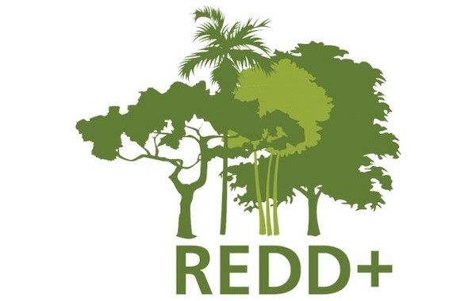
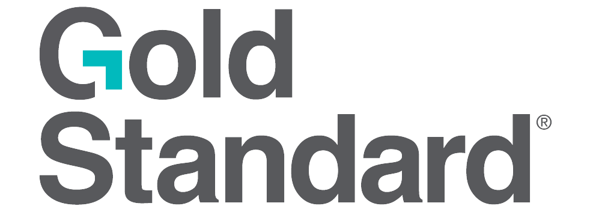
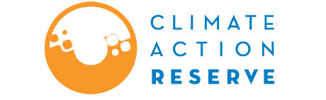
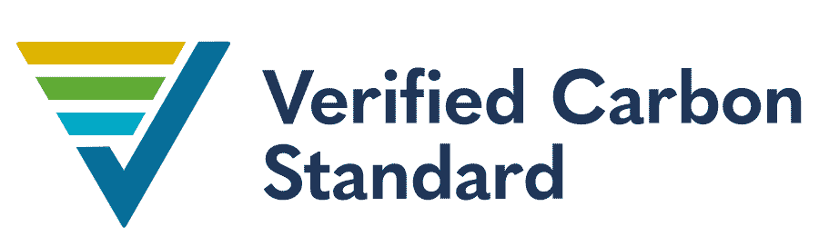

投入市場策畫碳權採購
什麼是國際自願性碳權採購
國際自願性碳權採購是企業和個人為了抵消其碳排放而在非強制性市場中購買碳信用的一種方式。這些碳信用通常由認證的再生能源、森林保護或其他減排專案所產生，並經過嚴格的標準認證，以確保其環境效益的真實性。透過自願性碳權採購，參與者能在減少自身碳足跡的同時，支持全球的氣候行動。
自願性碳權市場提供了靈活性和選擇性，使企業和個人能夠根據其環保目標和財務能力，購買適合的碳信用。這不僅幫助參與者達成碳中和目標，還能提升其環保形象，對應對氣候變遷做出實質性貢獻。
碳信用來源
碳信用來源來自於各種減排專案，包括再生能源專案（如風能、太陽能）、森林保護與碳封存專案（如REDD+）、能源效率專案（如工業設備升級）及碳捕集與封存專案（CCS）。這些專案由Gold Standard、Climate Action Reserve（CAR）、Verified Carbon Standard（VCS）等組織驗證與認證，確保碳信用的真實性與可靠性，幫助企業和個人通過購買碳信用來抵消碳排放，推動全球減碳行動。



